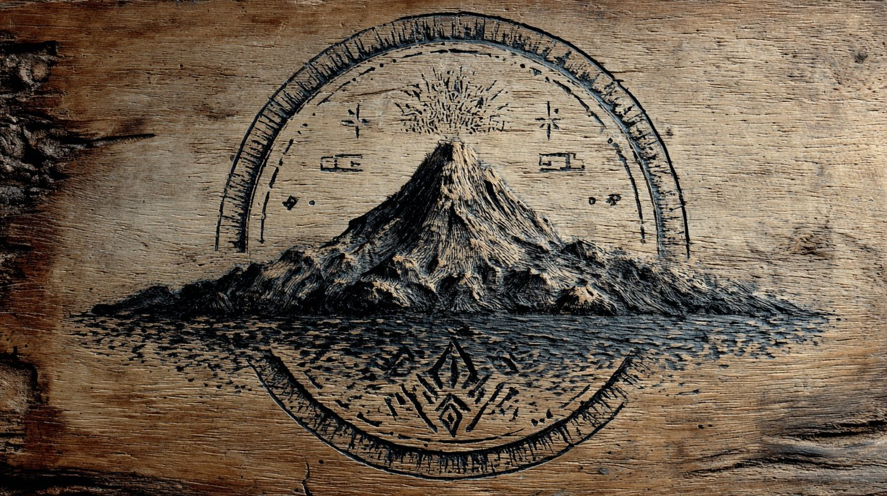

Slow news from a quiet island.
Saga is a serial novel, told in episodes. It's set on Tenerife, the largest of the Canary Islands, a volcano off the coast of Africa, in the spring of 2041. The world has been mostly quiet for twelve years: the flights stopped landing, the cargo ships stopped coming, and the internet stopped working, in that order. Some people left while they could. Some chose to stay.
This is a story about the ones who stayed ⁓ and about Saga, who was born into the quiet and grew up finding it completely normal.
Each episode is told as an installment of a small radio program called Nivaria ⁓ the old Roman name for this island ⁓ broadcast to nobody in particular from somewhere in the cloud forest. Saga is Swedish for story. Her mother chose it.
More episodes join the list as the circuit continues.